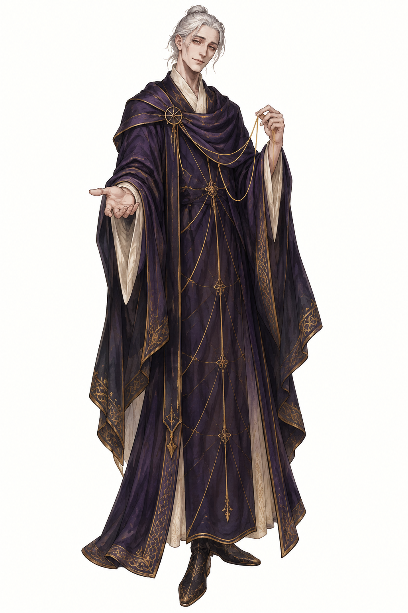

The KeeperA pale, ageless presence who quietly teaches the Commander to leave an echo behind.Portrait references, native overhead studies, and opening dialogue.
Future identity notes are kept behind a labeled design-spoiler disclosure.

The KeeperA pale, ageless presence who quietly teaches the Commander to leave an echo behind.